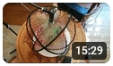
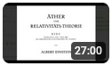
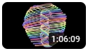
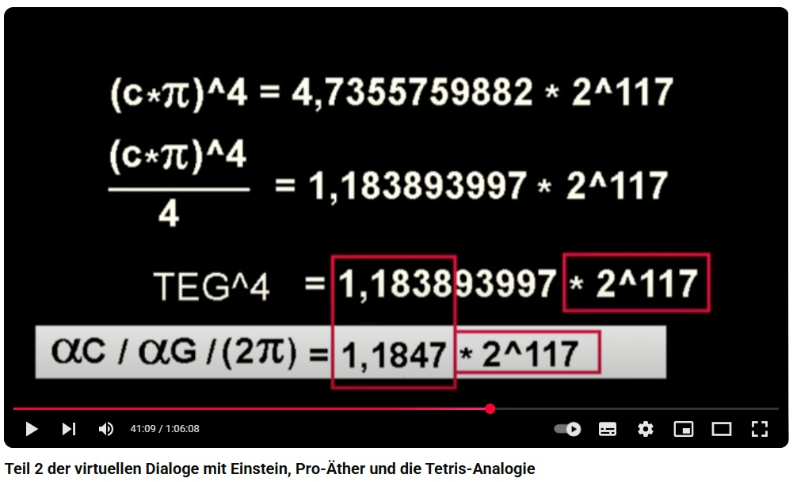

Doku zum Wirbelweltbild -
Virtuelle Gespräche mit Einstein:
Gott spielt Tetris
Volltextsuche OC Ausgabe 1950
OC in der Physik
Dialoge mit Albert E.
Youtube:

Vorrede für den virtuellen Einstein-Dialog zum Wesen der Gravitation
Youtube:

Teil 1 der virtuellen Dialoge mit Einstein, Alberts pro-Äther-Vortrag von 1920
Youtube:

Teil 2 der virtuellen Dialoge mit Einstein, Pro-Äther und die Tetris-Analogie
Teil 3:
Teil 3 in Vorbereitung, zunächst als Blog, NEWTONS SCHATTEN
Teil 4:
Teil 4 in Vorbereitung, zunächst als Blog, WAHRNEHMUNG, ANBINDUNG
Teil 5:
Teil 5 in Vorbereitung, zunächst als Blog, MÄANDER

Downloads der Videos (keine Untertitel):
Vorrede (146 MB)
Teil 1 (65 MB)
Teil 2 (139 MB)
Videos bei Telegram (keine Untertitel):
Vorrede
Teil 1
Teil 2
Download Audios
(nicht empfohlen beim ersten Mal, da Bilder für Verständnis notwendig)
Audio Teil 1 (26 MB)
Audio Teil 2 (63 MB)
Audio Teil 1+2 (89 MB)
Download der zugehoerigen Grafik als pdf
Grafik online
Download pdf des gesprochenen Textes
Starten oder Download JavaScript fuer Berechnungs-Liste
Liste aus JavaScript als pdf
|
Home
| Termine
| Videos
| Links
| UeberUns
| Impressum
| Datenschutz
| Sitemap
|